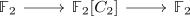
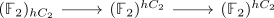
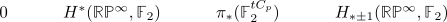

gustavs genius computation of RP infinity
Steps
a)
- we have a fiber sequence in $\mathcal{D}(\mathbb{F}_2[C_2])$

where $\mathbb{F}_2$ has the trivial action, i.e. $C_2$ acting trivially (by the identity).
- we have $\mathbb{F}_2$ with the trivial action and a fiber sequence

for group homology, group cohomology and tate construction. Todo: link identification of group homology/cohomology and classifiyng space
- by connectivity reasons of homology / cohomology (lives in nonnegative/nonpositive degrees) we can cut out short exact sequences (after rotating)

where we have consistently used homological indexing.
- low computations show
using universal coefficient Theorem for cohomology / Hurewicz theorem
in particular, $\mathrm{Ext}^1_{\mathbb{F}_2[C_2]}(\mathbb{F}_2,\mathbb{F}_2) \cong H^1(\mathbb{R}\mathbb{P}^{\infty}, \mathbb{F}_2) \cong \mathbb{F}_2$ shows that there exists a nontrivial extension We can write down
as nontrivial extension.
- Let $t \in \pi_{-1}(\mathbb{F}_2^{t C_2})$ be the nontrivial element. We want to show that multiplication with $t$ is an equivalence on the tate construction (i.e. the tate constrution is a laurent ring).
here we may use <todo> naturality + symmetric monoidalness (etc.) that is multiplication with $t$ is given by applying the tate construction to the fiber sequence (classified by the extenison)
\begin{displaymath}
\begin{tikzcd}
\mathbb{F}_2[C_2] \rar & \mathbb{F}_2 \rar{\cdot t} & \mathbb{F}_2[1] \\
\mathbb{F}_2[C_2]^{tC_2} \rar & \mathbb{F}_2^{tC_2} \rar{\cdot t} & \mathbb{F}_2[1]^{tC_2} \\
0 \dar{\cong} & & \\
\end{tikzcd}
\end{displaymath}tate construction is an exact functor and $\mathbb{F}_2[C_2]^{tC_2}$ vanishes.
- this shows that multiplication with $t$ is an equivalence, going through degrees calculates $H_*(\mathbb{R}\mathbb{P}^{\infty},\mathbb{F}_2), H^*(\mathbb{R}\mathbb{P}^{\infty},\mathbb{F}_2)$
b)
use topology exercise sheet 14, to show that $H_*(\mathbb{R}\mathbb{P}^{\infty}, \mathbb{F}_p), H_*(\mathbb{R}\mathbb{P}^{\infty}, \mathbb{F}_p)$ vanishes
in other words: $\mathbb{F}_p$ is projective over $\mathbb{F}_p[C_2]$
c)
compute:
need to show that $H_*(\mathbb{R}\mathbb{P}^{\infty}, \mathbb{Z}/2^n) \rightarrow H_*(\mathbb{R}\mathbb{P}^{\infty}, \mathbb{Z}/2)$ is an isomorphism ?
second attempt
Use the long exact sequence
which classifies an extension - i.e. an element in $\mathrm{Ext}^2_{\mathbb{Z}[C_2]}(\mathbb{Z}^{\mathrm{sign}}, \mathbb{Z}^{\mathrm{sign}})$. It is nontrivial, as it is given by $t^2$ in $H^*(\mathbb{R}\mathbb{P}^{\infty}, \mathbb{F}_2)$ after tensoring with $\mathbb{F}_2$.
Then apply the tate construction and use vanishing of $(\mathbb{Z}^{\mathrm{sign}})^{tC_2}$.
This shows $(\mathbb{Z}^{\mathrm{sign}})^{tC_2} \cong \mathbb{F}_2[t]$
have some sequence $\mathbb{Z}^{\mathrm{sign}} \rightarrow \mathbb{Z}[C_2] \rightarrow \mathbb{Z}$ and then
useful case
- resolve group homology / group cohomology